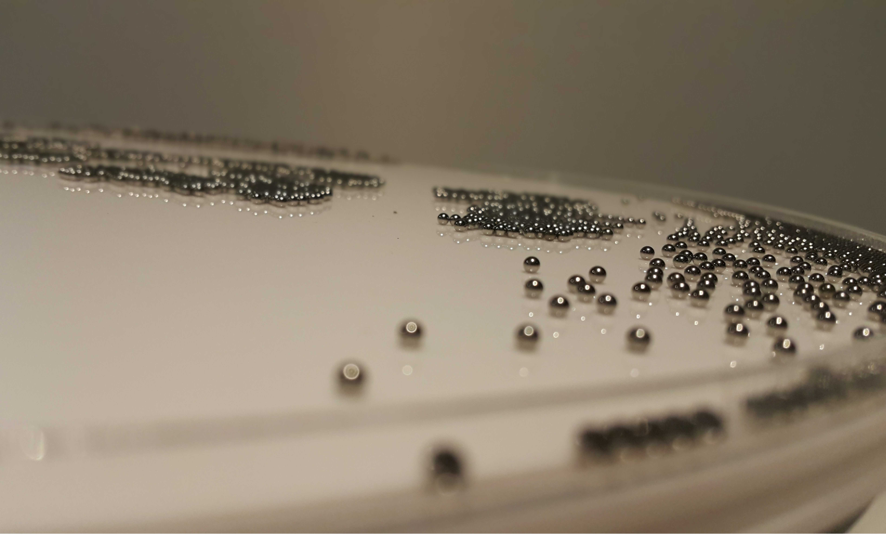
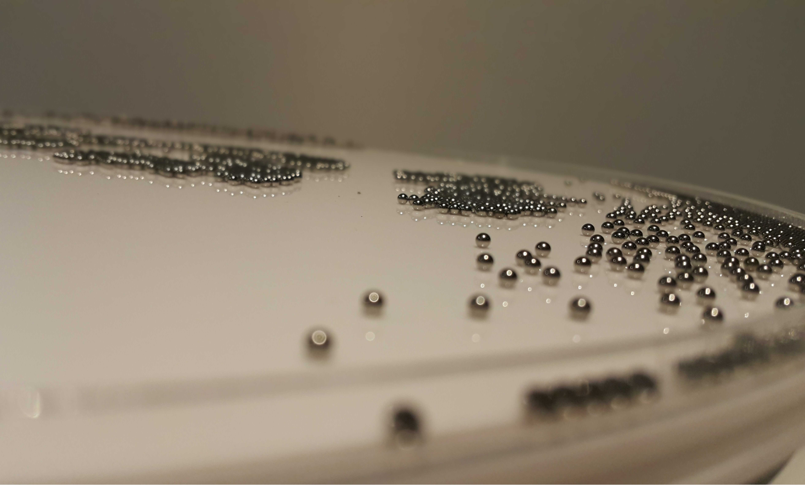
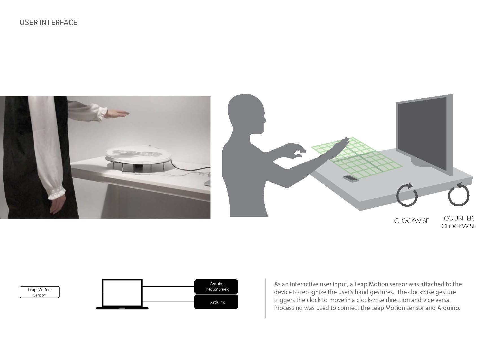
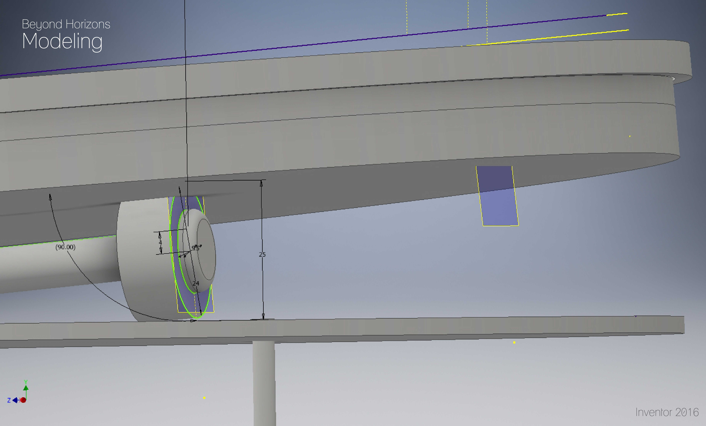
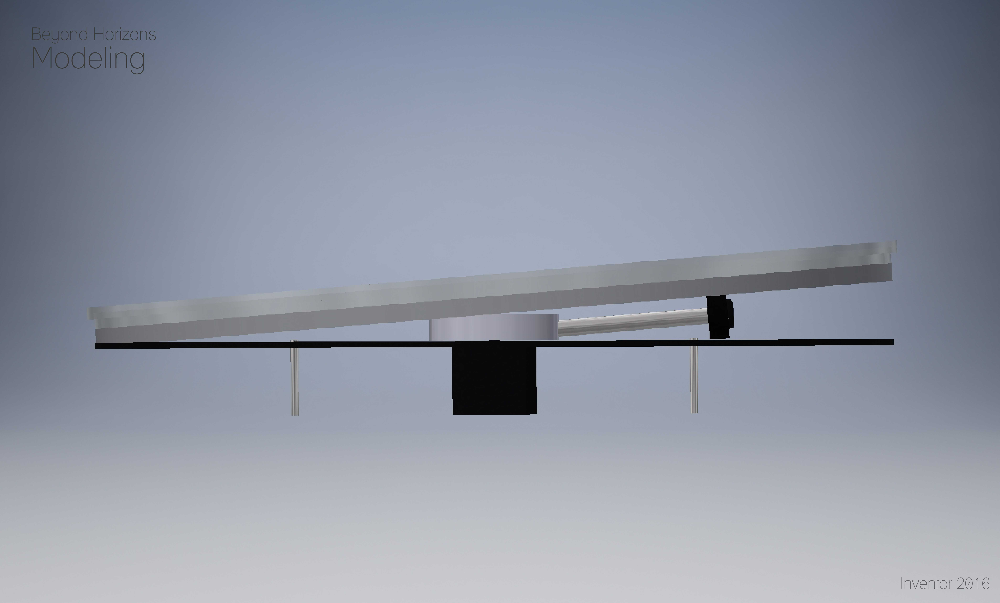
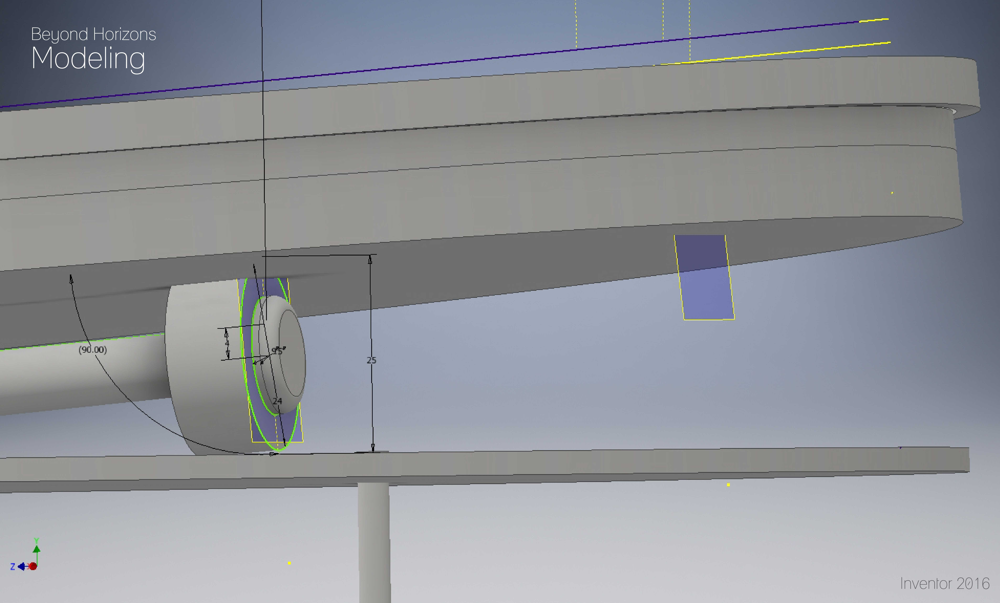
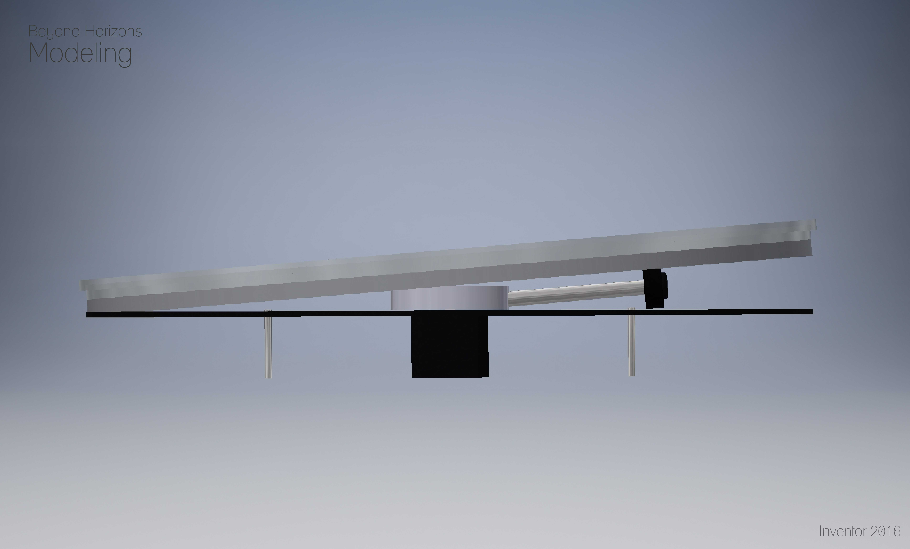

>Beyond Horizon:
A Conceptual Digital Clock
- Client:Class Project
- Date:Oct, 2015
- Category:Creative Projects
- Tags:Interaction Design, Concept Design, Mechanical Design
Beyond Horizon is a conceptual clock wobbling around near the surface while displaying the time with the metal balls floating on the surface. The user can control the rotational directions (clockwise / counterclockwise) with the leap motion sensor with simple hand gestures.
Design
The main part of Beyond Horizon are thin cylindrical disks (diameter : 40mm), which are each filled with metal balls. An array of magnets attached to the opposite side of the disk give the metal balls beautiful movements down the surface.
The current prototype is made as a conceptual clock design leaving implementation of the automatic number display as a future work.
 



Designing Process : Mechanisms
The most challenging part of Beyond Horizons was acheiving gentle wobbling motions while maintaining the thin and sophisticated design. Following sketch illustrates several possible types of mechanisms and its required components. Both the 3D printer and the laser cutter were utilised throughout the design process.


Final Design
After numbers of trial and error, following mechanism was fixed as the final design. I anchored the axis of the motor to the center point of the disk. It gave the disk full freedoom of rotation, similar to a ball joint. To prevent the disk (display) from spinning together with the motor axis, I connected one end of the disk with a rubber band that loosely anchors the disk while applying a mininum amount of force to move the disk up and down.

User Interface
As an interactive user input, a Leap Motion sensor was attached to the device to recognize the user's hand gestures. The clockwise gesture triggers the clock to move in a clock-wise direction and vice versa. Processing was used to connect the Leap Motion sensor and Arduino.
3D Modeling
Inventor 2015 was used to simulate mechanisms. The spinning part attached to the stepper motor is exported to print with 3D printers.
 


